Self-portrait with Dark Felt Hat- oil on canvas, 1886. At the van Gogh museum, Amsterdam.
His work
at Paris
.
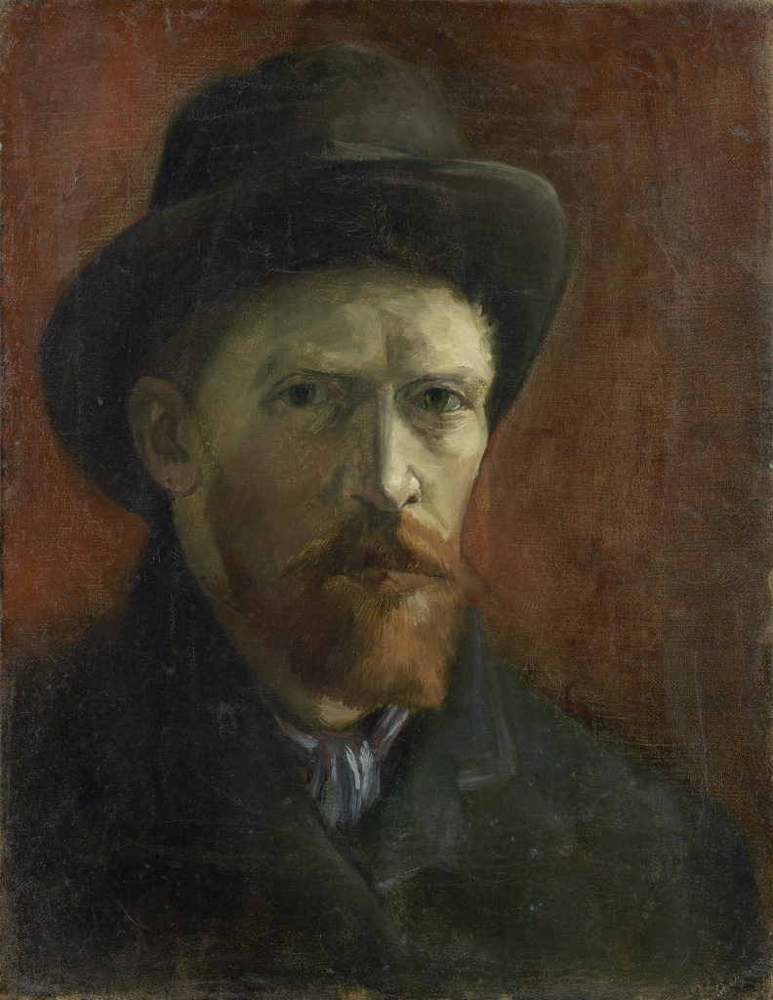
.
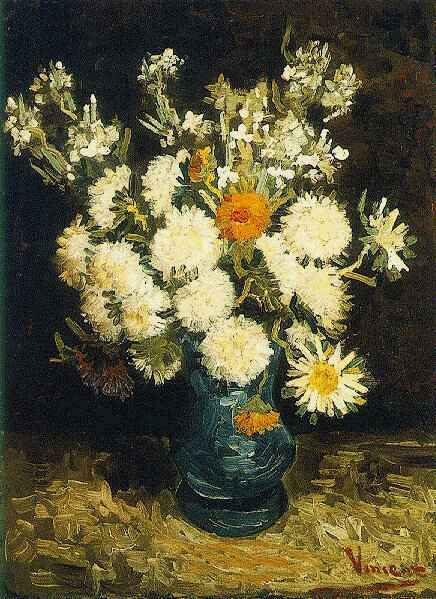
Flowers in a Blue Vase- Oil on canvas, 1886- At a private collection.
.
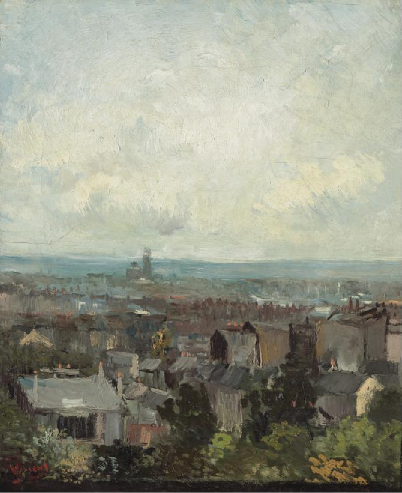
View of Paris from near Montmartre- Oil on canvas, 1886- National Gallery of Ireland, Dublin.
.
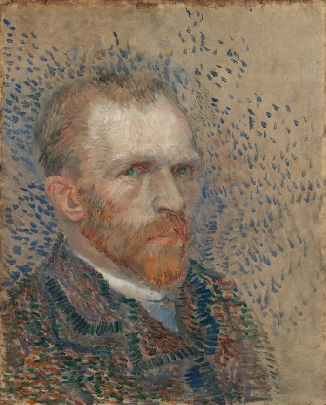
Selportrait- oil on canvas, 1887. At the van Gogh MUseum, Amsterdam. One of the many selfportraits that van Gogh painted, most of them during his time in Paris.
.
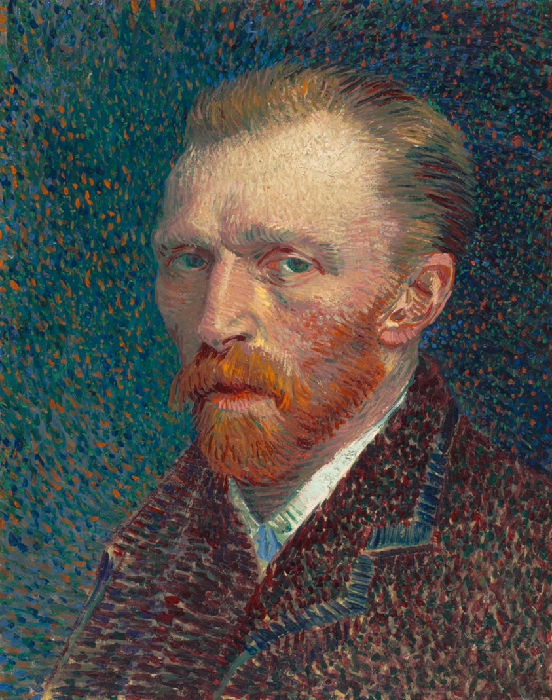
Sel-portrait- oil on canvas, 1887. At the Art Institute, Chicago.
.
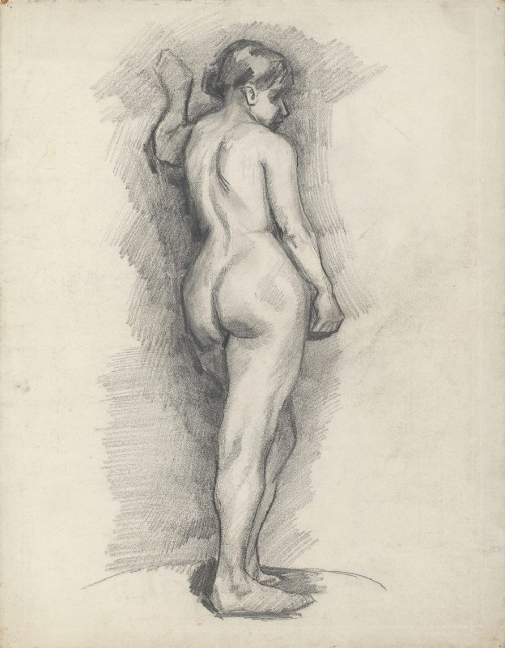
Standing Female Nude Seen from the Back- Pencil on paper, 1886. At the van Gogh MUseum, Amsterdam.
.
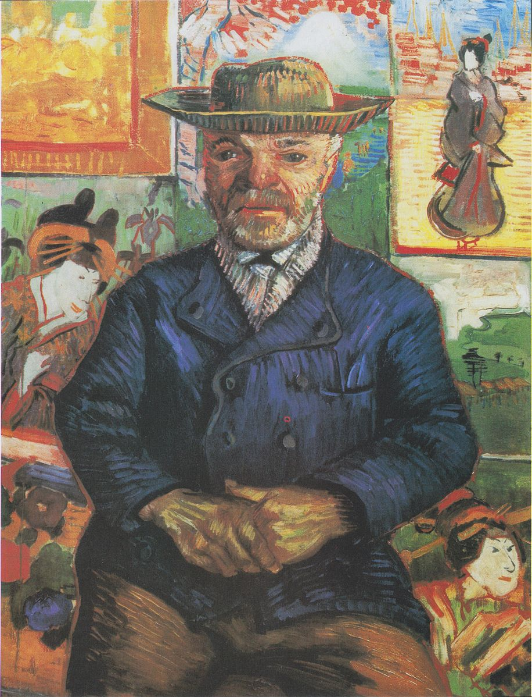
Portrait of Pere Tanguy- Oil on canvas, 1887-88. At a private collection.
.
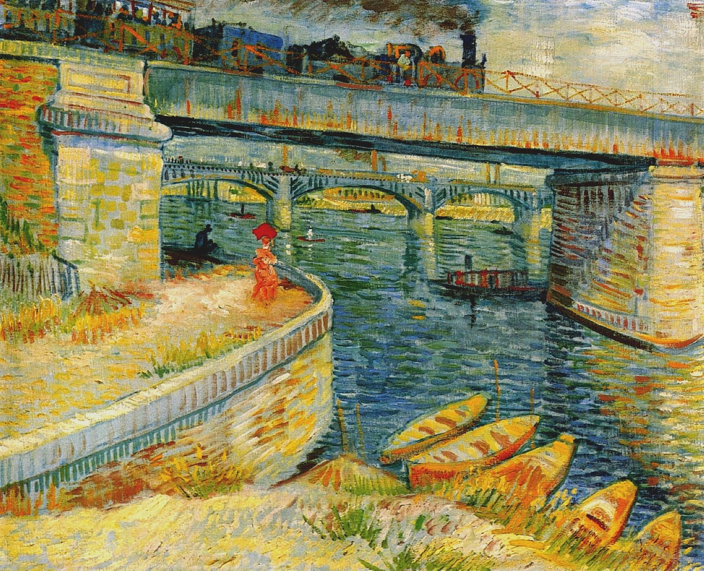
Bridges acroos the seine at Asnieres- Oil on canvas- Summer 1887. At Foundation E.G. Bührle, Zürich.
.
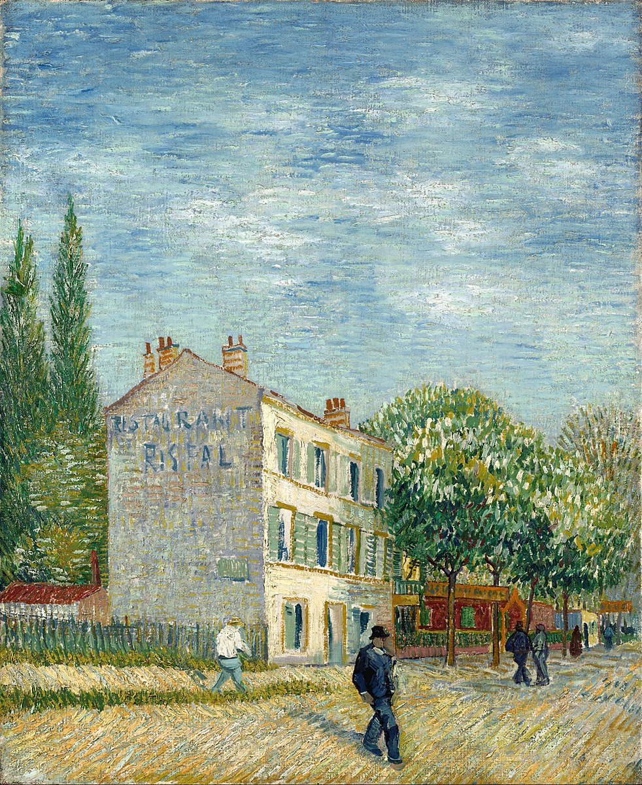
The restaurant Rispal in Asnières- oil on canvas, summer 1887. At Nelson-Atkins Museum of Art, Kansas City.
.
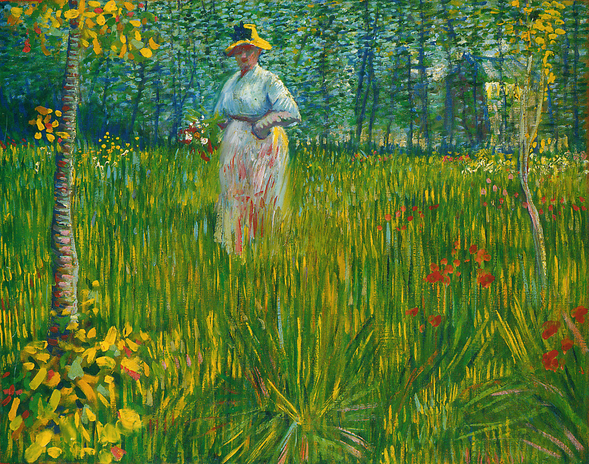
A Woman Walking in a Garden - oil on canvas, unknown date. At a private collection.
.
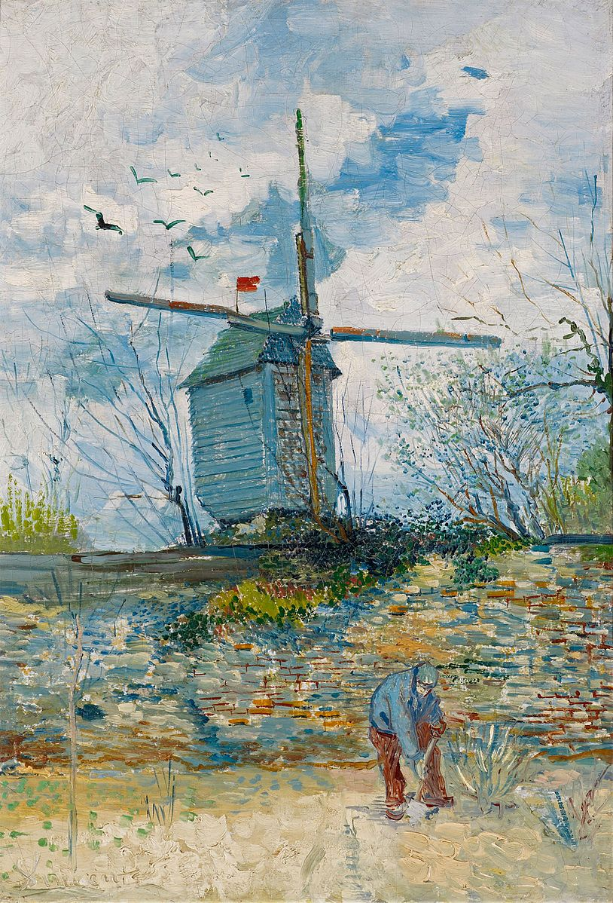
Le Moulin de la Galette- oil on canvas, autumn 1886. At a private collection.
.